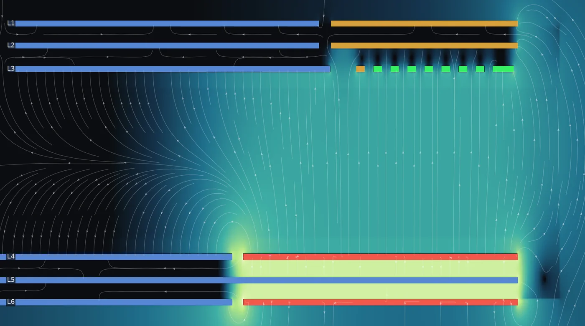
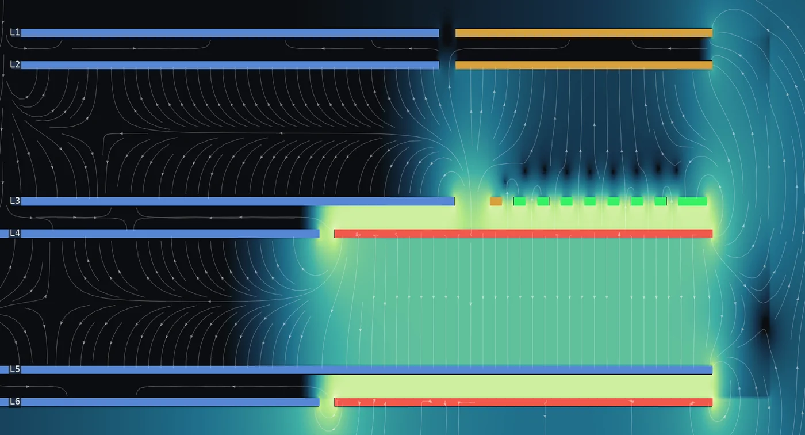
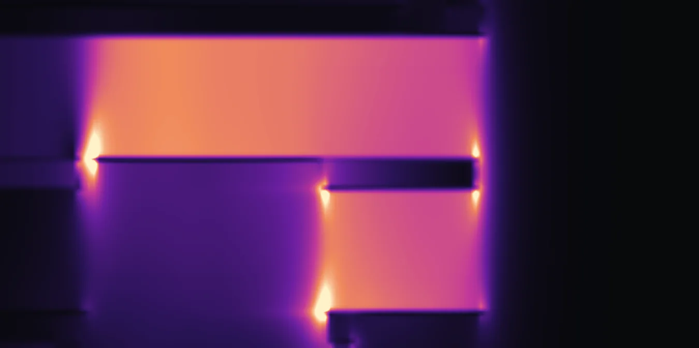
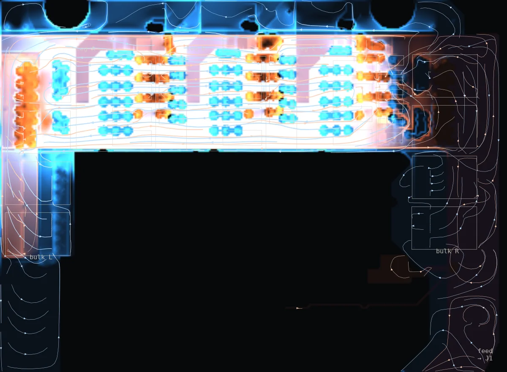
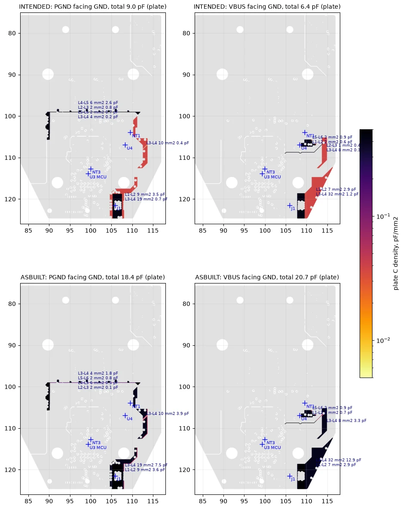

Rev8 Stackup by the Numbers
The rev8 boards were built on KiCad's default 6-layer stackup instead of the specified one. The copper is identical; which layers sit 0.1 mm from each other changed. This page measures what that does to the power bus and to the analog sense lines, with a 3D field solve of the bus copper, a switching simulation of the GaN half-bridge, and 2D solves of the sense-trace cross-sections.
Companion to the interactive Rev8 Stackup Viewer. All numbers: leg C switching at 8.4 V and 10 A unless noted. Blue: intended (the specified stackup). Orange: as built (KiCad default).
The noise source barely changed. The coupling did.
| quantity | intended | as built | change |
|---|---|---|---|
| Aggressor: VBUS at the feed under the sense bundle | |||
| device-loop burst (330–340 MHz), peak within 300 ns | 113 mV | 72 mV | ×0.6 |
| bus modes, 0.1–0.3 µs after the edge | 3.3 mV @ 1.45 MHz | 3.4 mV @ 1.3 MHz | ×1.0 |
| 96 kHz ripple, peak to peak | 116 mV | 116 mV | ×1.0 |
| Coupling: VBUS feed → analog traces on L3 (2D) | |||
| capacitance per mm, over the feed | 7.4 fF/mm | 74 fF/mm | ×10 |
| open-node HF divider C_VBUS / C_total | 0.046 | 0.458 | ×10 |
| feed current → trace loop mutual inductance | 0.2–0.9 pH/mm | 2.5–6.9 pH/mm | ×7–11 |
| Victim: pickup on the sense nodes after the 69 ns ADC aperture, 0–200 ns after an edge | |||
| VSNS node | 0.04 mV | 0.35 mV | ×9 |
| ISNS node (INA296 output 20–100 Ω, assumed) | 0.006–0.020 mV | 0.04–0.12 mV | ×6 |
| feed-current EMF in the trace loop (upper bound) | 0.05–0.25 mV | 0.45–1.46 mV | ×6–10 |
| same, as phase-current error (0.1 V/A) | 0.5–2.5 mA | 4.5–15 mA | ×6–10 |
| Bus inductance, bank → leg C, 10 MHz (3D) | |||
| leg C bottom bank (hot loop, board side) | 62–105 pH | 65–127 pH | ×1.06–1.22 |
| right bulk 47 µF ×4 | 226–267 pH | 402–472 pH | ×1.77 |
| left bulk 47 µF ×4 (far side) | 534–592 pH | 1234–1345 pH | ×2.3 |
Ranges in the inductance rows: low value with the device pads as ideal conductors (28-port model), high value with a copper slab across them (single-port model); the ratios agree. "Upper bound" for the EMF: the full loop EMF is counted, and how much of it reaches the ADC depends on where the trace/AGND loop closes.
What changed: which layers are neighbours
Same six copper layers, same artwork. The specified stackup builds two tight triplets, L1-L2-L3 and L4-L5-L6, with a thick core between them. KiCad's default spaces the layers in pairs instead: L3 and L4 end up 0.1 mm apart, and L2 and L5 move half a millimetre away from the layers they were meant to shield.
Mechanism 1: the sense traces lost their shield
The analog bundle (ISNS ×3, VSNS ×3, VREF, 3V3A) runs on L3 for 23–27 mm over the VBUS feed on L4. As specified, L3 sits 0.1 mm under the AGND plane on L2 and 1.05 mm above L4, so the feed's field lands on AGND. As built, L3 is 0.1 mm above L4 and half a millimetre from AGND: the traces sit in the feed's field. Coupling capacitance and mutual inductance both go up by about ten.


Cut at y = 105 mm, VBUS at 1 V and every other net at 0 V; 2D finite-volume solve with the dielectrics. Copper: red VBUS, blue PGND, amber AGND, green analog traces, grey GND.
| fraction of VBUS noise reaching the VSNS node | 96 kHz | 1 MHz | 10 MHz | HF limit |
|---|---|---|---|---|
| intended | 0.023 % | 0.24 % | 1.2 % | 1.4 % |
| as built | 0.23 % | 2.4 % | 12 % | 14 % |
Mechanism 2: the bus got more inductive
Between the bulk capacitors and the legs, VBUS exists only as a band on L3 and L4. As specified, each band layer has its own PGND plane 0.1 mm away (L2 and L5), and the bus field stays in those two thin gaps. As built, those planes are 0.535 mm away: the same current encloses about four times the flux per millimetre, and whole bank-to-leg loops come out 1.8–2.3× more inductive. The return current still lines up under the band at 10 MHz; it is just further away.

Cut across the band at x = 98 mm, y 90–103 mm, for 1 A from the left bulk to leg C; each image on its own scale. Field energy across this cut: 15.4 pH/mm intended, 59.0 pH/mm as built (×3.8).


The aggressor: what VBUS does at the feed
A more inductive bus would be expected to ring harder, and the device does see about 35 % more bus impedance at the mode peaks. But the feed under the sense bundle sits behind that inductance. As built, a smaller share of each edge's fast current reaches the feed, so the voltage there is about the same, and the 330 MHz burst is even somewhat lower. The bus modes move from about 1.45 to 1.3 MHz.
Current each capacitor group supplies into VBUS after the HS turn-on (10 A step), log time. As built, leg C's own banks carry more of the first nanoseconds (7.7 vs 6.5 A at 1 ns) and the far bulk joins later (0.4 vs 1.0 A at 100 ns): each leg is more isolated from its neighbours and the bulk.
The victim: pickup on the sense nodes
Multiply a similar aggressor by ten times the coupling and the pickup goes up by six to ten. The capacitive part arrives with the 330 MHz burst and is mostly averaged away by the ADC's 69 ns aperture. The magnetic part follows the feed current, which keeps changing for about half a microsecond after each edge, so it survives the aperture: up to about 1.5 mV as built against 0.25 mV intended.
When it matters. The firmware samples current four times around the PWM crest, 417 ns apart, each with a 69 ns aperture. An edge lands inside that sampling burst (about 1.7 µs around the crest) only when the smallest phase duty drops below about 0.2: high speed, and sooner at low pack voltage. That is where the as-built board's 4.5–15 mA of extra phase-current error appears, and shunt selection turns a common pickup into about twice that in the αβ frame. The Stackup Viewer animates this.
What did not change
- The switching edge. SW rise 1.16 vs 1.12 ns, device current peak 19.6 A in both, ring 333–340 MHz in both. The hot loop changes by only 4–22 pH on a loop dominated by the package.
- Voltage stress and shoot-through. 100 V parts on an 8.4 V bus; no new path.
- Thermal and mechanical. The board is 1.6 vs 1.663 mm and still symmetric.
Everything else the stackup touches
A separate review checked what else the change could affect: every cross-net overlap on every layer pair, crosstalk inside the bundle, the regulator and gate-drive loops, thermal paths, the encoder. Nothing comes near the two findings above. For scale, one ADC LSB is 0.73 mV, about 7 mA of phase current.
PGND facing GND: it does not matter. As built, L3 GND sits 0.1 mm over L4 PGND around J1 and in a strip beside the net tie NT1; total PGND–GND plate capacitance goes from 9.0 to 18.4 pF. The two nets are already tied at NT1 and inside every LMG2100 (its AGND pin is on GND and is internally the low-side source). The voltage across the overlap is the PGND drop between J1 and NT1: about 1 mV at µs scale, at most about 50 mV at the 330 MHz ring. Through a few pF that is nA up to about 1 mA, and NT1 is the lower-impedance path below 1–2 GHz. AGND, the net the ADC references, is not involved (≤ 0.1 pF to PGND). VBUS facing GND goes from 6.4 to 20.7 pF at the same places, next to U4's roughly 6 µF of input capacitors that already connect VBUS to GND: the same story.

| item | intended → as built | effect |
|---|---|---|
| analog bundle over digital GND near the MCU (5–8 mm per net on L4 GND instead of L2 AGND) | 0.05 → 0.4–0.6 pF per net | ≤ 0.2 mV on VSNS, ≤ 0.03 mV on ISNS, asynchronous to the PWM. The largest new effect, still small. |
| DAC_1–3 crossing under VSNS/ISNS | 2 → 22 fF per crossing | None in flight: the DACs are static in the flight firmware. |
| Kelvin SNS± pairs over the SW keep-outs | CM 15 → 25 fF | Matched between SNS+ and SNS−. Differential coupling is lower as built, because L4 PGND now shields the pairs. |
| VBUS/PGND plate capacitance | 222 → 103 pF | Negligible next to the MLCCs (4.7 vs 2.2 Ω at 330 MHz, against 0.2 Ω of MLCC path). |
| gate drive, SPI, debug on L4 | Z0 50.9 → 49.8 Ω | Identical GND exposure, net by net. |
| crosstalk inside the bundle | 32.5 → 33.6 fF/mm | No change. |
| LMG2100 thermal path | 13.7–16.2 → 13.2–15.6 K/W | Vias dominate; no change. |
| MA732 encoder, stray field from the band | 0.11 → 0.28 µT/A | µT level against a ≈ 50 mT magnet. |
| regulator loops, MCU power, plane-cavity modes | same | Cavity modes 1.5–2.5 GHz in both stacks, far above the edge content. |
Refinement to the EMF numbers. The INA296s' REF1 pins are fed from +VREF along the same bundle, so the same feed current induces a partly cancelling EMF there. Below about 2 MHz the real EMF error is about 0.5–0.7× the bound shown above; above about 5 MHz, about 1×. The stackup ratio is unchanged.
Context, in both stackups. Each phase output has a 3.3 nF + 12 Ω snubber to PGND after the ferrite, downstream of the shunt. Every edge pushes about 28 nC through the shunt, which ISNS reads as roughly 0.2 A peak, still 10–15 mA at 0.5 µs. Samples within half a microsecond of an edge are therefore already disturbed on either stackup; the as-built EMF adds a smaller, systematic layer on top. This is not a stackup effect.
How these numbers were made, and their limits
- 3D bus model: PyPEEC 5.8 on the VBUS and PGND copper of the rev 8.1.1 file, 100 µm × 11.5 µm voxels, 28 terminals, DC and 10 MHz, both stackups (as-built gaps modelled as 0.1035 / 0.5405 mm). Reciprocity 4e-6, KCL 1e-11.
- Switching: Xyce, unofficial LMG2100R044 model with the leg's real gate-drive parts, on the exported bus with Murata capacitor models; probe voltages per harmonic to 1 GHz with frequency-dependent copper resistance. Checked against Xyce's own node voltages to within 2–7 %.
- Coupling: 2D finite-volume cross-sections with the dielectrics (as-built εr assumed 4.5; the fab's real stackup is unconfirmed).
- Not modelled: GND/AGND copper in 3D, the regulator input capacitors, AGND bounce, the real INA296 output impedance at tens of MHz. Only one leg switches at a time.
- No bench data yet. A scope capture of VBUS at the feed (or at C97/C98) during a switching edge would check the 330 MHz and 1.3–1.5 MHz numbers directly.